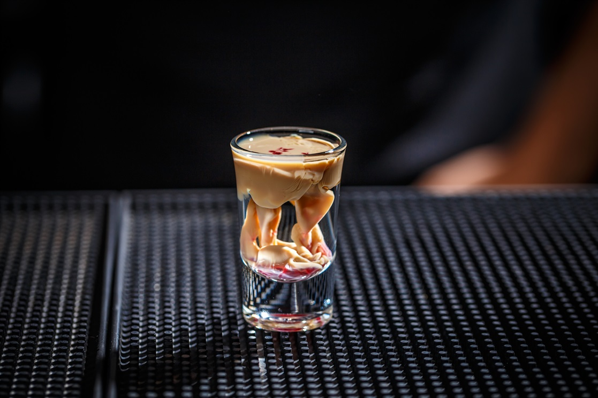

Brain Hemorrhage(Halloween Alcohol Drink)

DESCRIPTION
Brain hemorrhage shots are fun to serve at Halloween parties. They look so disgusting and creepy, you may have a hard time getting your guests to try one!
Ingredients
- 1 fluid ounce chilled peach schnapps
- 1 teaspoon chilled Irish cream liqueur (such as Bailey's)
- 1 splash chilled grenadine syrup
- Pour Schnapps into a shot glass. Very gently pour Bailey's over top; let sit until it begins to clump and curdle. Gently pour in grenadine.
NUTRITION FACTS
- 192 Calories
- 0g Fat
- 32g Carbs